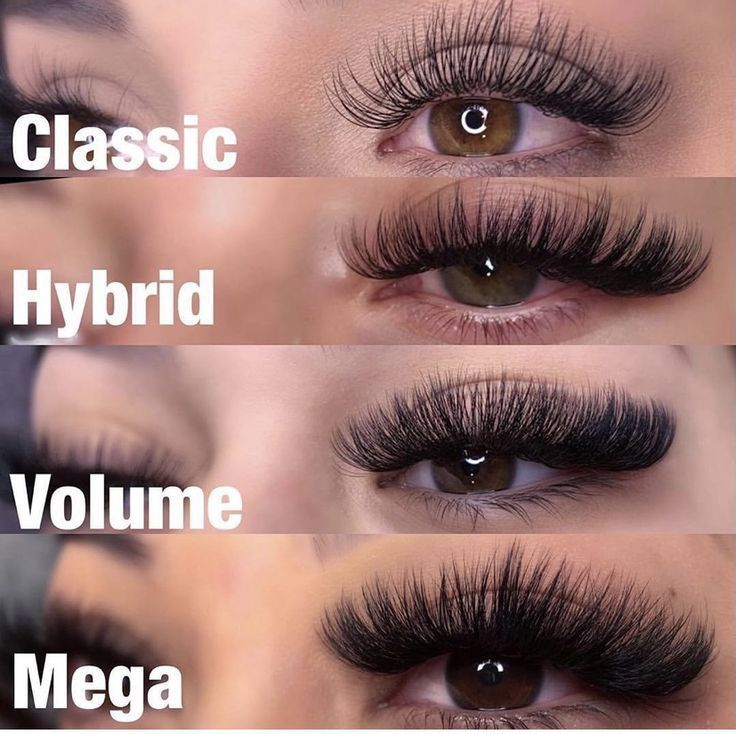
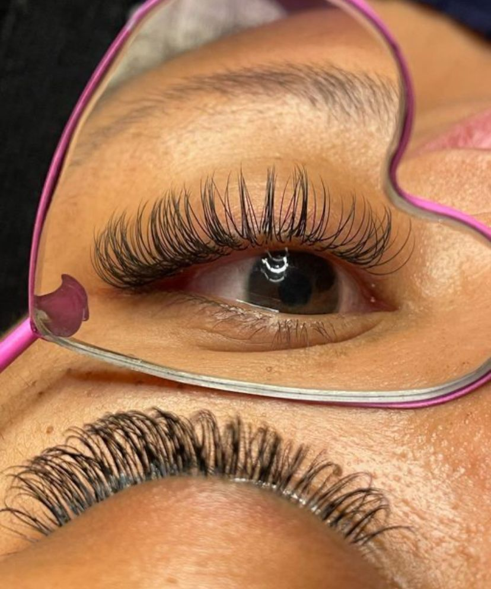
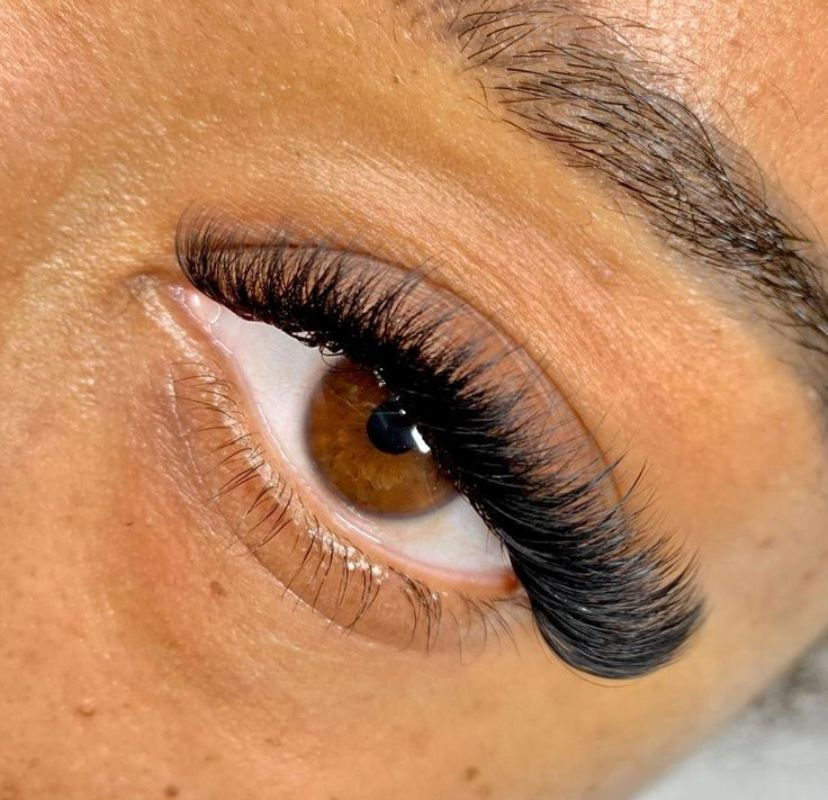
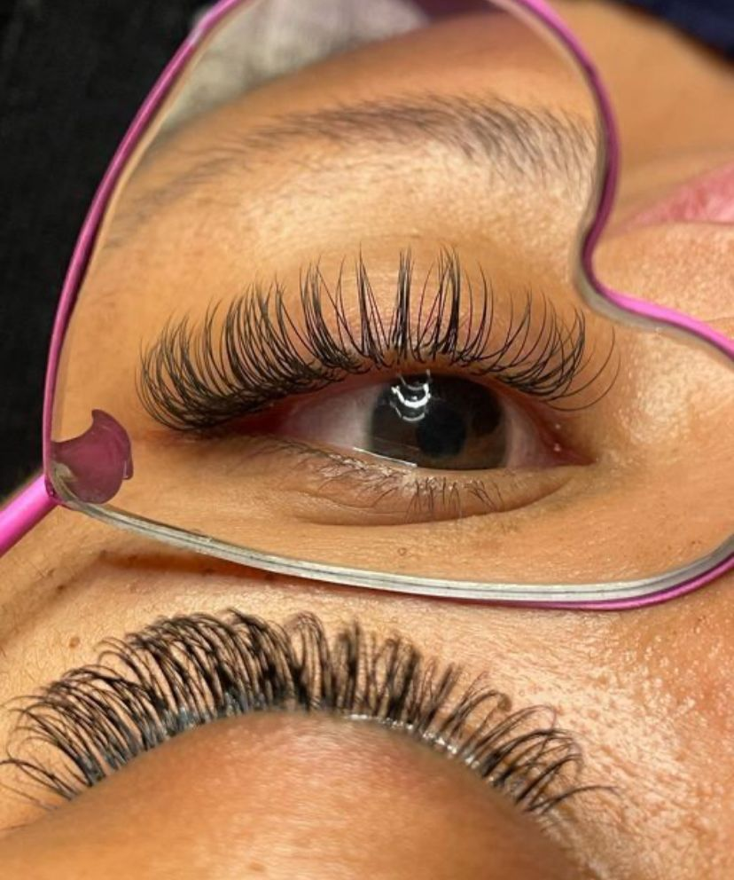
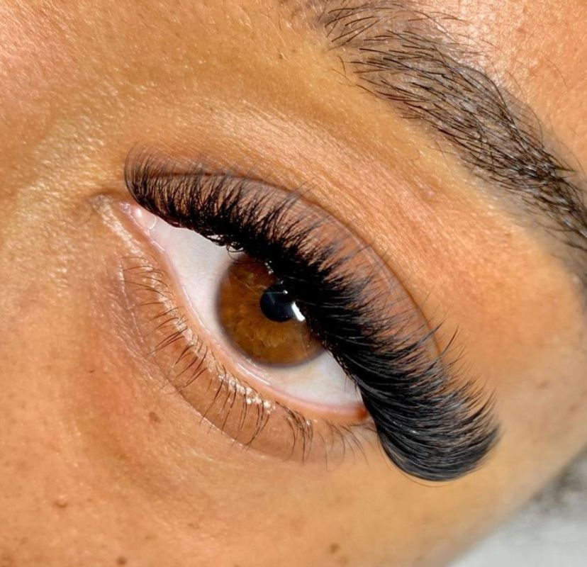

Styles de Extension de cil proposés :
- Classique (Cil à cil) :La pose d’extensions de cils classique, aussi appelée cil à cil, offre un rendu naturel et élégant.Parfaite pour sublimer le regard au quotidien, cette technique apporte longueur et définition tout en conservant un effet discret et raffiné.
- Hybride :La pose d’extensions de cils hybride combine la technique cil à cil et le volume russe pour un résultat plus dense et texturé.Idéale pour celles qui recherchent un équilibre entre naturel et intensité, elle donne un regard structuré et sophistiqué.
- Volume Naturel :La pose d’extensions de cils volume naturel offre un résultat plus fourni que le classique, tout en restant doux et subtil. Idéale pour celles qui souhaitent un regard plus expressif sans sacrifier la légèreté, elle apporte du volume tout en conservant une apparence naturelle.
- Mega Volume :La pose d’extensions de cils mega volume est conçue pour un regard intense et spectaculaire.Grâce à une densité maximale, elle est idéale pour les mariages, événements spéciaux et toutes celles qui veulent un effet dramatique assumé.
Que ce soit pour un événement particulier ou pour sublimer votre beauté au quotidien, nos expertes vous accompagnent afin de créer une pose adaptée à la forme de vos yeux et à votre personnalité. Nous proposons également des formations professionnelles en extensions de cils, conçues pour vous transmettre une technique maîtrisée, des bases solides et une expertise reconnue. Débutante ou passionnée souhaitant se perfectionner, nous vous guidons à chaque étape pour transformer votre talent en véritable savoir-faire. Découvrez l’art des extensions de cils et révélez votre élégance avec assurance.
Réservez une séance 


